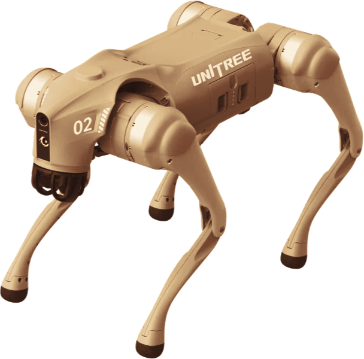

Consegna · 29 ottobre 2026Fai lavorare il tesista sul robot dal primo giorno.
Il 29 ottobre consegniamo un quadrupede Go2 a un gruppo industriale italiano, per una tesi in azienda. Il robot arriva con l'area di lavoro già mappata e il codice già nel repository dei tecnici.
(Segnaposto: immagine ufficiale Unitree Go2. Qui andrà la foto della consegna.)

Cosa resta al cliente
- 01Go2 EDU con LiDAR
- 05Simulatore MuJoCo
- 02Mappatura LiDAR dell'area di lavoro
- 06Manuale tecnico, revisione 1.1
- 03Digital twin dell'area di lavoro
- 07Repository di codice condiviso
- 04SLAM e navigazione già configurati
- 0885 ore di assistenza
(Versione anonima: pronta da pubblicare finché manca il consenso scritto del cliente.)